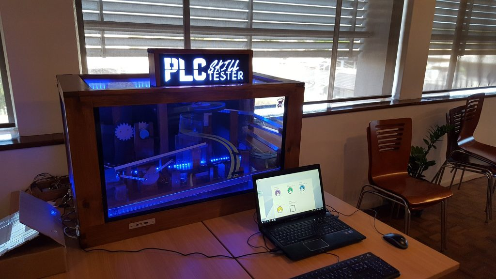

Tweets by IoTSCADA_AU
We are a community, passionate about IoT, SCADA, Control Systems, Automation, PLCs, security and anything related! We are a volunteer-driven group, open to experts and beginners alike, who get together and share their challenges, ideas, and interests in a supportive and collaborative environment.
We’re running monthly catch-ups, where we pick a topic for the night and have presentations, projects, activities–all ideas are welcome and everyone is encouraged to get involved!

This code of conduct outlines our expectations for participants within the IoT and SCADA Hackers community, as well as steps to reporting unacceptable behaviour. We are committed to providing a welcoming and inspiring community for all and expect our code of conduct to be honoured. Anyone who violates this code of conduct may be banned from the community.
Our community strives to:
Be friendly and patient.
Be welcoming: We strive to be a community that welcomes and supports people of all backgrounds and identities. This includes, but is not limited to members of any race, ethnicity, culture, national origin, colour, immigration status, social and economic class, educational level, sex, sexual orientation, gender identity and expression, age, size, family status, political belief, religion, and mental and physical ability.
Be considerate: Your work will be used by other people, and you in turn will depend on the work of others. Any decision you take will affect users and colleagues, and you should take those consequences into account when making decisions. Remember that we’re a far-reaching community, so you might not be communicating in someone else’s primary language.
Be respectful: Not all of us will agree all the time, but disagreement is no excuse for poor behaviour and poor manners. We might all experience some frustration now and then, but we cannot allow that frustration to turn into a personal attack. It’s important to remember that a community where people feel uncomfortable or threatened is not a productive one.
Be careful in the words that we choose: we are a community of professionals, and we conduct ourselves professionally. Be kind to others. Do not insult or put down other participants. Harassment and other exclusionary behaviour aren’t acceptable.
Try to understand why we disagree: Disagreements, both social and technical, happen all the time. It is important that we resolve disagreements and differing views constructively. Remember that we’re different. The strength of our community comes from its diversity, people from a wide range of backgrounds. Different people have different perspectives on issues. Being unable to understand why someone holds a viewpoint doesn’t mean that they’re wrong. Don’t forget that it is human to err and blaming each other doesn’t get us anywhere. Instead, focus on helping to resolve issues and learning from mistakes.
Reporting Issues:
If you experience or witness unacceptable behaviour—or have any other concerns—please report it by contacting us via the contact form on the website. All reports will be handled with discretion. In your report please include:
Your contact information.
Names (real, nicknames, or pseudonyms) of any individuals involved. If there are additional witnesses, please include them as well. Your account of what occurred, and if you believe the incident is ongoing. If there is a publicly available record (e.g. a mailing list archive or a public IRC logger), please include a link.
Any additional information that may be helpful.
After filing a report, a representative will contact you personally, review the incident, follow up with any additional questions, and make a decision as to how to respond. If the person who is harassing you is part of the response team, they will recuse themselves from handling your incident. If the complaint originates from a member of the response team, it will be handled by a different member of the response team. We will respect confidentiality requests for the purpose of protecting victims of abuse.
We would like to that the team at https://todogroup.org for their work on creating an open code of conduct, which has been utilised here.